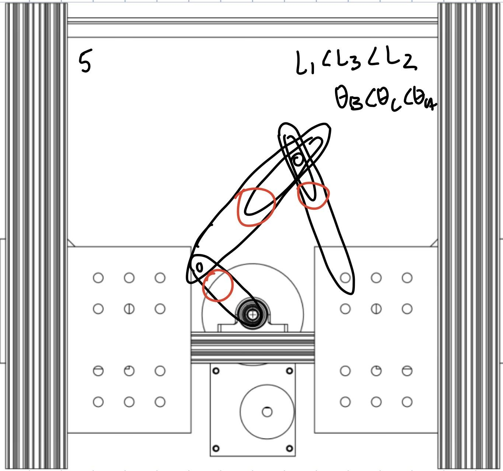
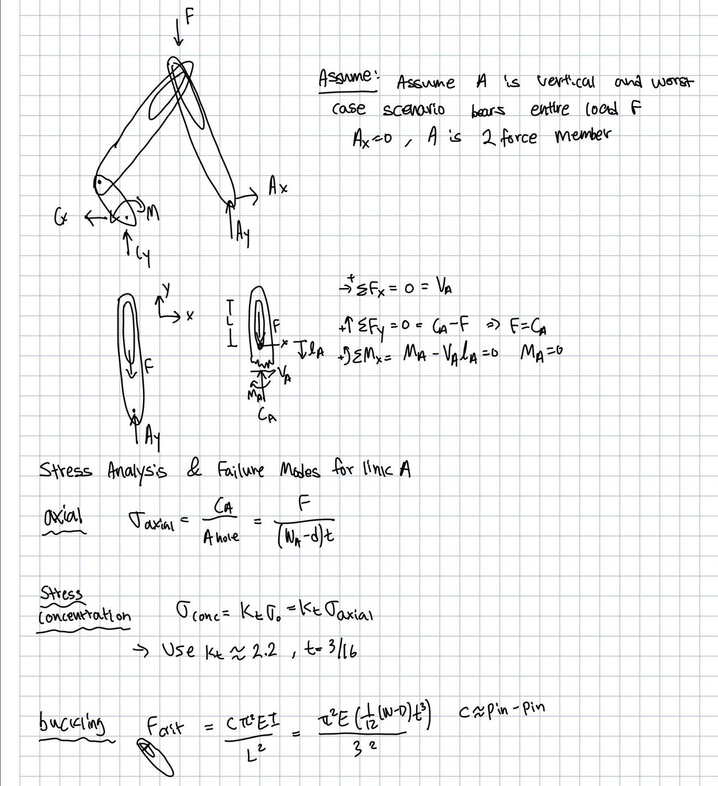
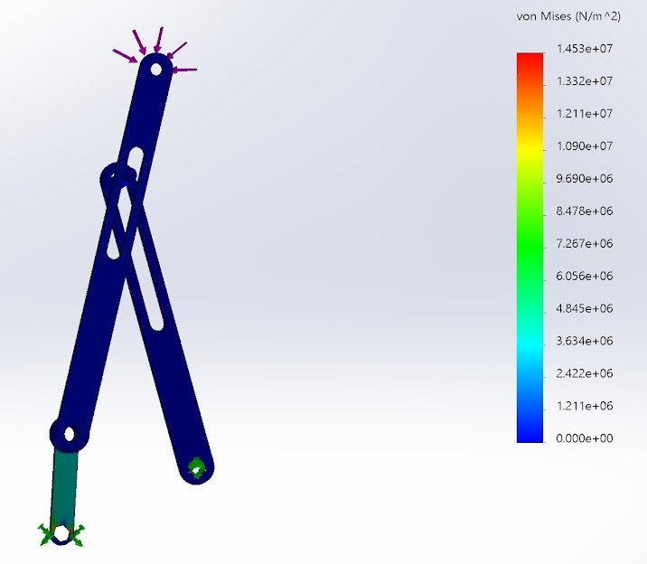

Overview
For CMU's Design I course, my partner and I designed a linkage that converts a motor's rotation into a vertical stroke long enough to press the button that opens a habitat airlock. The links were laser cut from 3/16 inch acrylic and mounted on a standard aluminum test rig.
Concepts
We sketched six linkage layouts and narrowed them to three that used slots, since slots made it easier to meet the rig's geometry limits. Their maximum vertical reach was 7.5, 8 and 9.5 inches. The first design let one link slide down its slot and lose stroke, so we chose the third: a 2 inch crank with 7.5 inch and 6 inch slotted links.


Hand calculations
We modeled each link as a two-force member and checked axial, shear, bending and buckling stress at the most loaded position. With 3/16 inch acrylic and a factor of safety of 2, the shortest link was the most likely to fail, which set its maximum width at about 0.73 inches.
FEA
In SolidWorks, I ran a static study with the crank at full extension, where a single link carries the highest load along its circular path. The FEA agreed with the hand calculations on both the critical position and the failure point at the crank link.

Motion study
A SolidWorks motion study let us choose a starting position that reduced oscillation during the run, and showed the button is pressed for about 5 to 10 percent of each rotation. We used it to plan improvements to slot size, slot placement and the fixed link length for a smoother motion.